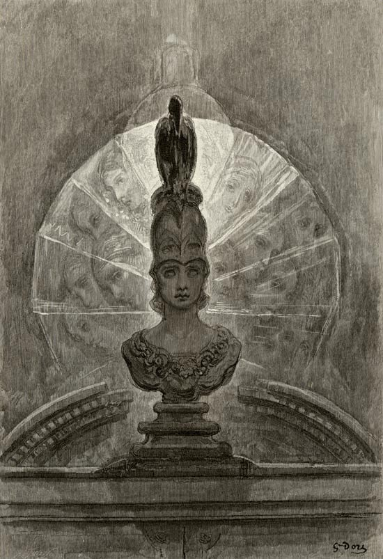

Poet · Storyteller · Critic
Edgar Allan Poe 1809 — 1849
An architect of atmosphere, an exacting literary critic, and a pioneer of the modern detective story—whose work still unsettles the border between reason and dream.
The writer
A singular voice in American letters, drawn equally to beauty, terror, logic, and loss.
Born in Boston in 1809, Poe worked across forms—as poet, short-story writer, editor, lecturer, and critic. His career unfolded in the demanding world of nineteenth-century magazines, where he earned notice for the sharpness of both his fiction and his reviews.
His tales helped define psychological horror and the detective story; his poetry pursued musical effect with extraordinary discipline. Works such as “The Raven,” “The Tell-Tale Heart,” and “The Murders in the Rue Morgue” remain central to his worldwide reputation.
Read the biographySelected works
Enter the chamber
Three works, three forms of unease: grief made incantation, guilt given a pulse, and inheritance rendered as a collapsing house.
The Raven
A midnight visitor turns mourning into an unforgettable refrain.
Explore the poem → Tale · 1843The Tell-Tale Heart
A speaker insists upon sanity while revealing the architecture of guilt.
Explore the tale → Tale · 1839The Fall of the House of Usher
A family, a mansion, and a landscape share one fatal decline.
Explore the tale →There is no exquisite beauty without some strangeness in the proportion.Edgar Allan Poe, “Ligeia”
From the journal
Beyond the familiar shadow
Read concise historical notes on Poe’s editorial career, the birth of C. Auguste Dupin, and the literary magazine he never lived to publish.